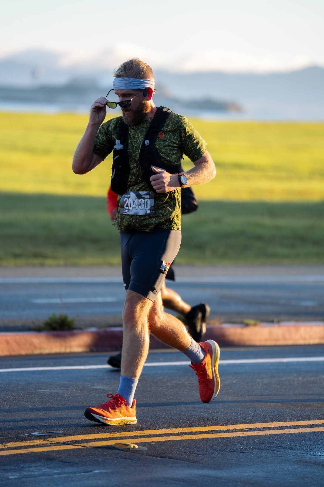
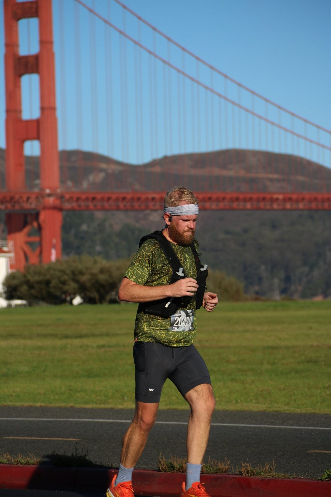

01 — The why
I spent a long time on the sidelines.
100+ lbs
Lost since the start
1:54:31
Half-marathon PR
14.3 mi
Longest run, so far
26.2
The number that's left
I picked up running in September 2025. Somewhere along the way I lost more than a hundred pounds — but the running is what stayed. This is the road to my first marathon.

